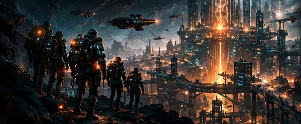
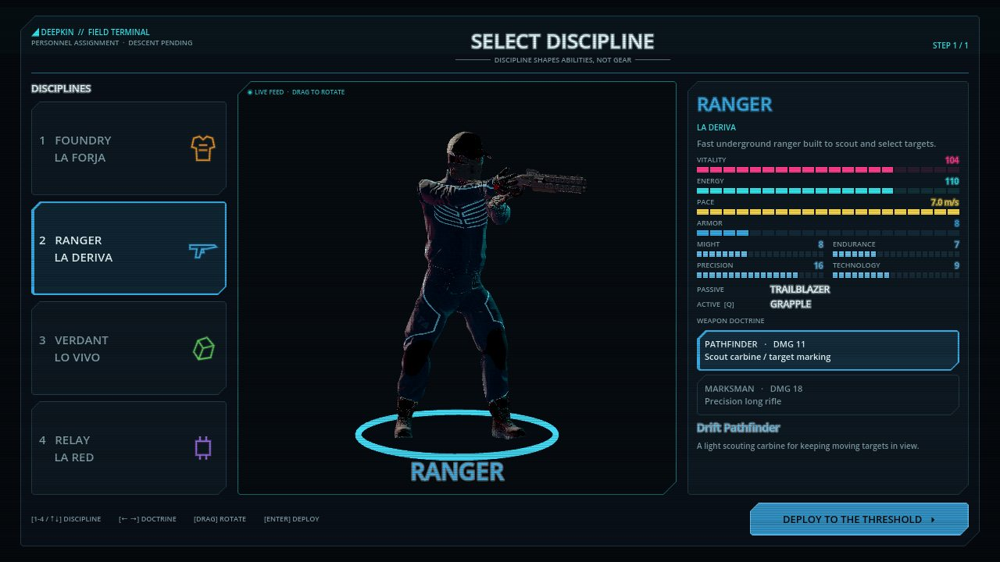
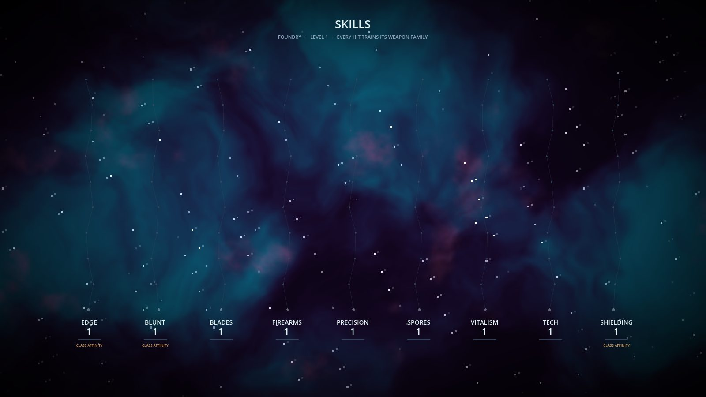

Explorar
Cavernas conectadas, superficie abierta y ruinas selladas. Cada ruta que encontrás es conocimiento que conservas.
En desarrollo · nombres y números pueden cambiar
Cada estrato esconde una historia.
Un RPG de acción cooperativo bajo tierra. Explorá, perforá, equipate… y decidí cuándo volver.
mové tu luz
Año 2318.
Han pasado ciento setenta años desde el Colapso.
Nadie recuerda exactamente cómo comenzó.
Leer la historia01
Cuatro ideas sostienen todo el juego.
Cavernas conectadas, superficie abierta y ruinas selladas. Cada ruta que encontrás es conocimiento que conservas.
Perforar es la forma de descubrir el mundo: abre pasajes, saca mineral de la roca y revela lo que estaba enterrado.
Trece ranuras de equipo, sin bloqueos de clase. Arma, armadura, batería y luz son tu build.
Cuatro civilizaciones, cuatro roles. Un equipo que se cubre llega más hondo y vuelve.
Elegí tu equipo, cargá la batería, llevá munición.
Bajá en el elevador del pozo o encontrá un camino desde la superficie.
Despejá amenazas, extrae mineral, rompe muros sellados.
Tu luz y tu vida son finitas. ¿Bajar más o volver?
Traé lo que aseguraste y armá tu próxima expedición.
02
Cuatro civilizaciones sobrevivieron al Colapso. Cada una manda abajo a su propio tipo de operador.

La Forja
Tanque · cuerpo a cuerpo
Máquinas. Fuerza. Resistencia.

La Deriva
Explorador · a distancia
Descubren. Señalan. Abren caminos.

Lo Vivo
Apoyo · control de área
La vida también es una herramienta.

La Red
Utilidad · ráfaga
La tecnología también es un arma.
03
Martillos, escopetas, proyectores de esporas y cuchillas de La Red. Cualquier clase puede llevar cualquiera.
04
Del Outpost por el pozo, a través de The Shallows hasta la excavación C-3… y arriba, a un cielo abierto y peligroso.

05
Sienten tus pasos a través de la piedra mucho antes de verte.
06
Capturas de la versión actual.






¿Qué hay debajo?
Manual de campo↑ ↓ para moverte · Enter para abrir · / en cualquier página para buscar